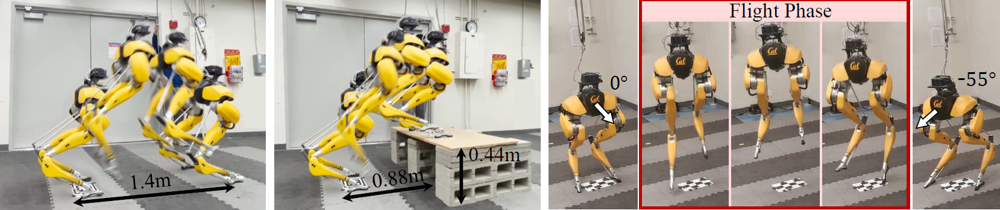

Zhongyu Li (1)Xue Bin Peng (2)Pieter Abbeel (1)Sergey Levine (1)Glen Berseth (3)Koushil Sreenath (1)
(1) University of California, Berkeley(2) Simon Fraser University(3) Université de Montréal, Mila

Abstract
This work aims to push the limits of agility for
bipedal robots by enabling a torque-controlled bipedal robot to
perform robust and versatile dynamic jumps in the real world.
We present a reinforcement learning framework for training
a robot to accomplish a large variety of jumping tasks, such
as jumping to different locations and directions. To improve
performance on these challenging tasks, we develop a new policy
structure that encodes the robot’s long-term input/output (I/O)
history while also providing direct access to a short-term I/O
history. In order to train a versatile jumping policy, we utilize
a multi-stage training scheme that includes different training
stages for different objectives. After multi-stage training, the
policy can be directly transferred to a real bipedal Cassie robot.
Training on different tasks and exploring more diverse scenarios
lead to highly robust policies that can exploit the diverse set
of learned maneuvers to recover from perturbations or poor
landings during real-world deployment. Such robustness in the
proposed policy enables Cassie to succeed in completing a variety
of challenging jump tasks in the real world, such as standing long
jumps, jumping onto elevated platforms, and multi-axes jumps.
@inproceedings{
CassieJumpLi2023,
author={Zhongyu Li and Xue Bin Peng and Pieter Abbeel and Sergey Levine and Glen Berseth and Koushil Sreenath},
editor={Kostas E. Bekris and Kris Hauser and Sylvia L. Herbert and Jingjin Yu},
title={Robust and Versatile Bipedal Jumping Control through Reinforcement Learning},
booktitle={Robotics: Science and Systems XIX, Daegu, Republic of Korea, July 10-14, 2023},
year={2023},
url={https://doi.org/10.15607/RSS.2023.XIX.052},
doi={10.15607/RSS.2023.XIX.052}
}